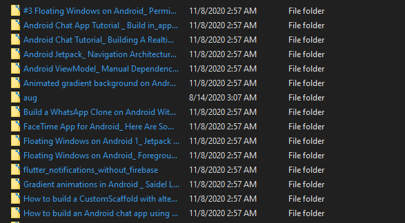

Hello! I am Debabrata Bhattacharya. Welcome to my projects page for Wget Downloader.
Here is a link to my portfolio page. And here's a link back to my projects page.
But first, a little about me!
I am a Software Engineer with experience developing Java, Python, Android, and JavaScript applications. I can develop, integrate, and deploy AWS services. I can also train and deploy Machine Learning models in Python.
Python application utility that downloads and archives webpages using the wget tool.
Wget_downloader.py "links.txt" "names.txt"Technologies used: Python, Wget
View the source code on GitHub here.
The python program checks for boundary cases and then uses the wget tool to download web pages into separate folders.
Here is an example.
This tool is meant to be used to download a list of links and store them in folders from a list of folder names, purely for archival purposes.
Here is a screenshot of the directory after downloading a set of links:

The folder names are the names of the webpages, the text encapsulated inside the title tag. Inside each folder are all the files required to view the webpage online.
Here is some sample code to help you gauge code style:
'''Downloads a list of links and stores them in folders from a list of folder names'''
class WgetDownloader(object):
def __init__(self,filename1, filename2):
self.filename1 = filename1
self.filename2 = filename2
self.names = []
self.links = []
self.queries = []
def open_files(self):
'''Open files and read them into lists'''
#check if file is empty
#
#Define exceptions
class Error(Exception):
"""Base class for other exceptions"""
pass
class FileIsEmptyError(Error):
"""Raised when file is empty"""
pass
#open links file and read lines into list
print("opening links file")
try:
with open(self.filename1) as f:
self.links = f.read().splitlines()
if not self.links:
raise FileIsEmptyError("links.txt is empty")
#print(self.links)
except FileNotFoundError:
print("file not found")
self.exit_function(status=3)
#open names file and read lines into list
print("opening name file")
try:
with open(self.filename2) as f:
self.names = f.read().splitlines()
if not self.names:
raise FileIsEmptyError("names.txt is empty")
#print(self.names)
except FileNotFoundError:
print("file not found")
self.exit_function(status=3)